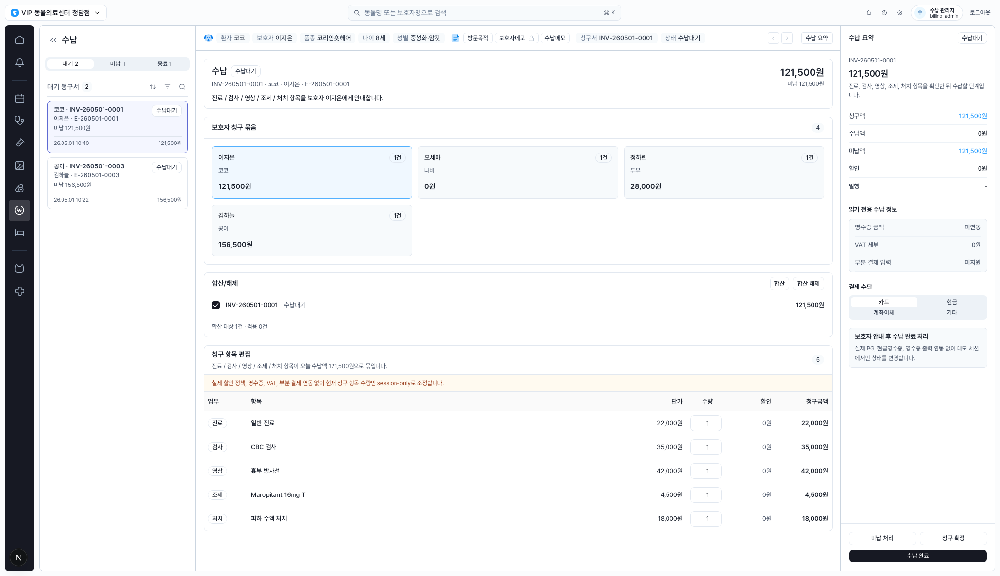
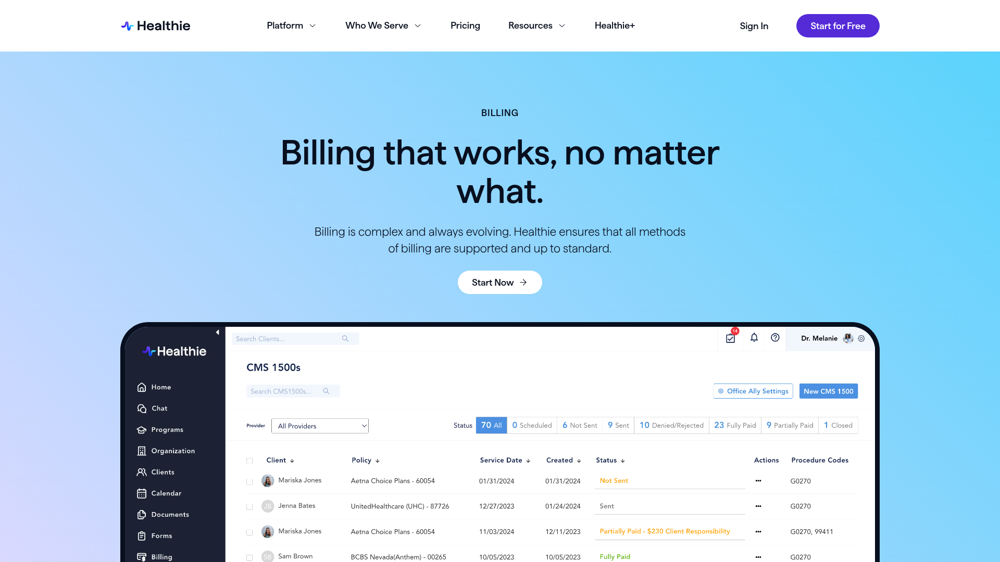
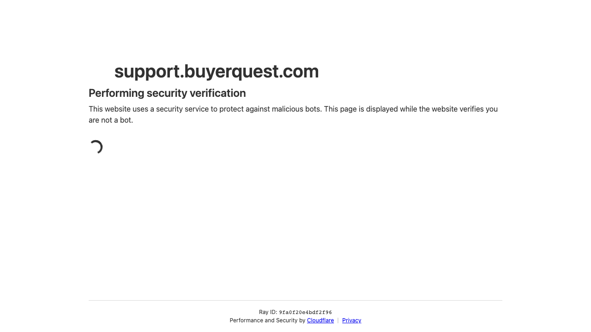
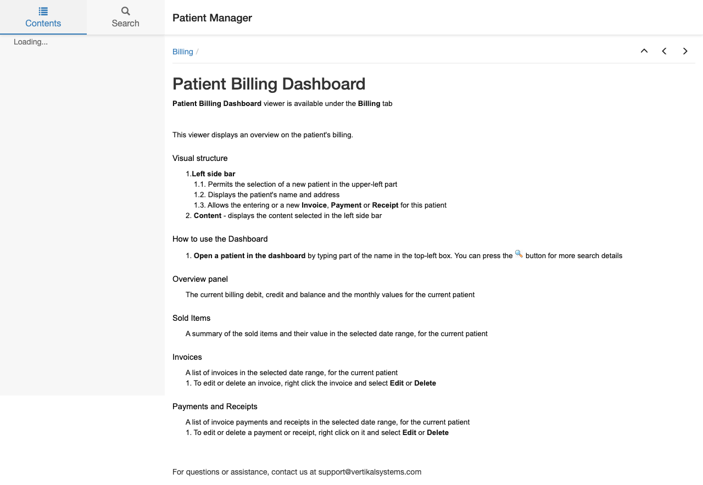
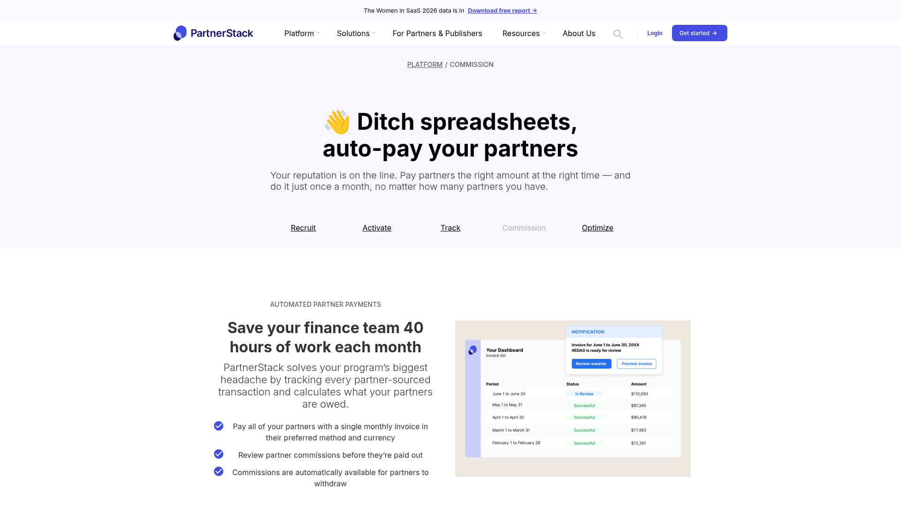
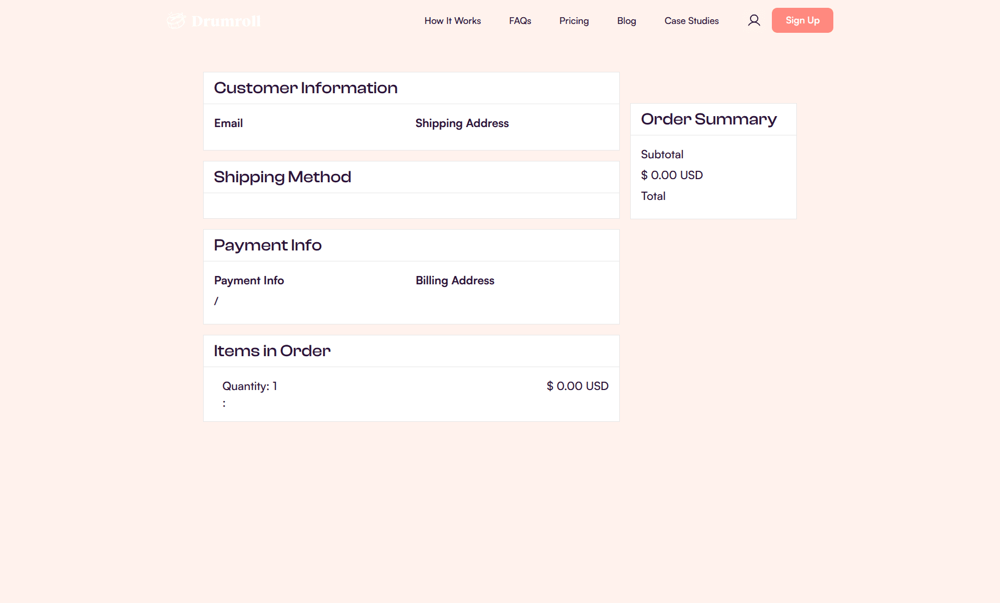

Design Improvement: CLAiR EMR Billing Workspace
수납 화면의 현재 상태를 기준으로, 참고 사례와 함께 바로 적용 가능한 개선 방향을 정리했습니다.
TL;DR
가장 큰 기회는 우측 수납 요약을 단순 금액 패널에서 “다음 행동을 판단하는 결제 준비 패널”로 바꾸는 것입니다. 보호자 안내, 청구 확정, 결제 수단 선택, 미납 처리의 순서가 한눈에 보이면 수납 담당자의 실수 가능성을 줄일 수 있습니다.
Current State

현재 수납 화면: 좌측 queue, 중앙 청구 항목, 우측 수납 요약 구조는 안정적이지만 결제 readiness와 action 순서가 더 명확해질 수 있습니다.
Improvement Ideas
1. 결제 준비 상태를 우측 패널 상단에 고정하기 ⭐
우측 패널을 금액 list보다 “수납 준비 체크”로 시작하도록 바꿉니다. 청구 항목 확인, 보호자 안내, 결제 수단, 미지원 연동 정보, 미납 여부를 compact checklist로 표시합니다.

Healthie billing page - status tabs and dense billing table pattern. [Lazyweb]
Why this works: billing table 앞에 status segmentation을 두면 “몇 건이 어떤 상태인가”를 빠르게 판단할 수 있습니다. CLAiR에서는 이 패턴을 우측 panel에 압축하는 편이 더 직접적입니다.
┌ 수납 요약 ────────────── 수납대기 ┐
│ 준비 상태 │
│ ✓ 청구 항목 5개 확인 │
│ ✓ 보호자 안내 대상 이지은 │
│ ! 영수증/VAT/부분결제 미연동 │
│ ○ 결제 수단 카드 선택 │
└ [청구 확정] [수납 완료] ─────────┘
2. 중앙 상단을 “수납 작업 헤더”로 압축하기
큰 청구서 카드의 설명 문장을 줄이고, 청구서 번호, 환자/보호자, 미납액, 상태, 주요 action을 한 줄 작업 헤더로 정리합니다.

Varis Accounts Payable Dashboard - consolidated invoice hub and action model. [Web]
Why this works: invoice 관련 정보와 action을 consolidated panel에 두면 첫 화면에서 판단 시간이 줄어듭니다.
3. 청구 항목 table에 category subtotal과 inline risk cue 추가하기
진료/검사/영상/조제/처치별 소계를 table 상단에 노출하고, session-only나 미연동 같은 주의 정보는 table 근처에 붙입니다.

Patient Billing Dashboard documentation - balance, sold items, invoices, payments, receipts separation. [Web]
Why this works: 보호자에게 항목을 설명할 때 category별 합계를 바로 말할 수 있고, 담당자는 금액 검토 부담을 덜 수 있습니다.
4. 합산/해제 영역을 “선택 작업”으로 더 작게 만들기
별도 큰 카드 대신 보호자 청구 묶음 아래 compact selection toolbar로 붙입니다. batch action은 유지하면서 화면 세로 공간을 아낍니다.

PartnerStack commission page - payout table and status chips for review state and amount comparison. [Lazyweb]
5. 수납 완료 CTA를 “확정 → 결제 → 완료” 흐름으로 분리하기
우측 하단 action을 stepper 흐름과 연결합니다. 미납 처리는 exception action으로 분리하고, 수납 완료는 최종 primary CTA로 유지합니다.

Drumroll order confirmation - right-side order summary and checkout review structure. [Lazyweb]
Applied HTML Draft
개선 포인트가 적용된 HTML 시안도 함께 생성했습니다.
Open billing-improved-mockup.html
시안은 실제 앱 코드를 변경하지 않는 standalone HTML입니다. 구현 시에는 기존 EMR token과 shared component 패턴에 맞춰 이 구조를 옮기면 됩니다.
What's Working
- 좌측 queue, 중앙 workspace, 우측 summary의 3분할 구조는 수납 업무에 잘 맞습니다.
- 현재 선택 invoice의 시각적 강조와 좌측 queue tab은 충분히 명확합니다.
- 청구 항목 table은 density가 좋고 column 구성이 안정적입니다.
- session-only/prototype boundary를 amber 안내로 노출한 점은 안전합니다.
All References